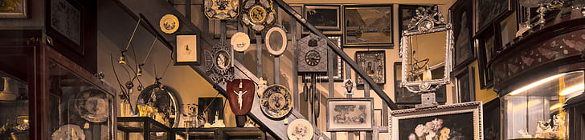

Antique shopping vs Mall shopping

Are you ever bored on weekends? I used to be. But then I discovered antiquing and never looked back.
Shop therapy is a thing. But mall shopping is dreadful. I mean there's only one mall around us and you already know what to expect. It's always crowded, leading to longer lines and an overall unpleasant experience. There's no thrill…not like with antique shopping: the feeling when you form a tangible connection to the past.
When I shop, I choose history, nostalgia, and character over modern, mass-produced plastic and polyester. When I antique, I shop mostly downtown, not all the way in Holyoke. I have a vast collection of vintage items in my room.antiques are at least 100 years old, representing a, far past, while vintage items are generally 20 to 99 years old Finding items that are 100 years old is fascinating and the rugged beauty of them still remains.
What is antique shopping and mall shopping
Antique shopping involves exploring specialized shops, estate sales, and flea markets to find unique furniture, jewelry, or collectibles. Mall shopping a vast, often multi-level, enclosed, or open-air structure featuring numerous retail stores, department stores, and food courts, designed for convenient, centralized shopping and entertainment.
The concept was popularized in the 1950s, types include regional malls, super-regional malls (over 800,000 sq ft), and smaller, often open-air "strip malls".While historically designed for shopping, many malls are adapting to declining popularity by incorporating mixed-use spaces, including residential, office, and, recreational facilities.
What a lot of people don't know is that vintage and antiques are two different things. Antiques are items that are a thousand years old and vintage are items that are 20-90 years old and retro is the modern style of an item from a specific time period.Antique shopping(antiquing) is the process of scouting, negotiating and purchasing items that are genuinely over 100 years old. This requires patience, research, and negotiation to identify quality and authenticity.
The contrast between antique shopping and mall shopping
comparing antique shopping to mall shopping, the focus should be on the contrast between experience-driven, unique treasure hunting and convenience-driven, standardized retail. Antique shopping is a sensory, often nostalgic experience, while malls offer instant enjoyment for modern, mass-produced items.
- The Shopping Experience & Atmosphere
- Antique Shopping: Often described as a "treasure hunt" or a meditative, slow-paced experience that involves digging, exploring, and discovering items with history. Many people visit antique malls for nostalgia, to take a "trip down memory lane”
- Mall Shopping: Focused on convenience, efficiency, and modern trends. It is a streamlined experience where items are easily found, categorized, and replaced.
- Merchandise Quality & Uniqueness
- Antique Shopping: Items are unique, often one-of-a-kind, and carry stories, character, and patina. You are purchasing quality, craftsmanship (e.g., dovetail joints), and history.
- Mall Shopping: Merchandise is mass-produced, standardized, and easily replaced. It lacks the individual story or "soul" of a vintage piece but offers consistency in quality and style.
- Price Points & Value
- Antique Shopping: Prices can be higher due to rarity and dealer expertise, though treasures can still be found. Haggling is often expected, especially for higher-ticket items, allowing for a better deal, unlike in traditional retail.
- Mall Shopping: Prices are fixed, clearly marked, and rarely negotiable. You pay for convenience, brand newness, and the ability to return items easily.
- Dealer Interaction & Expertise